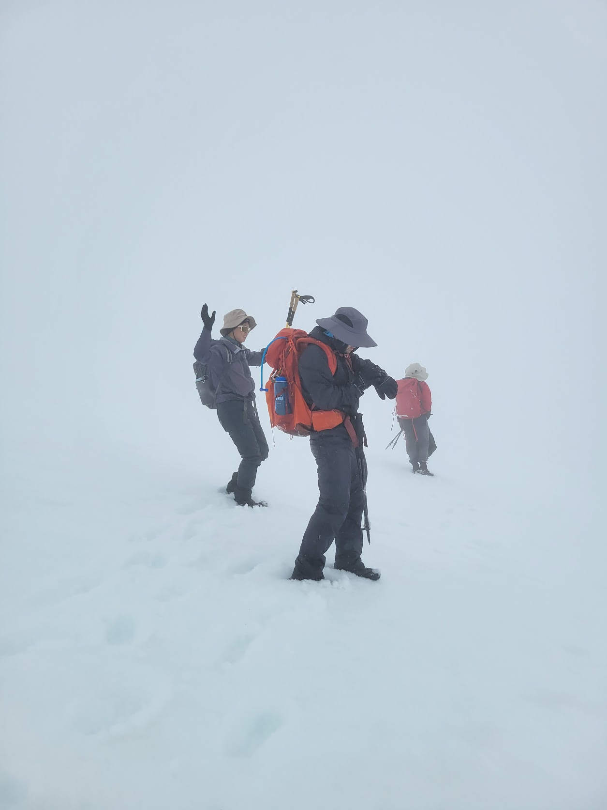
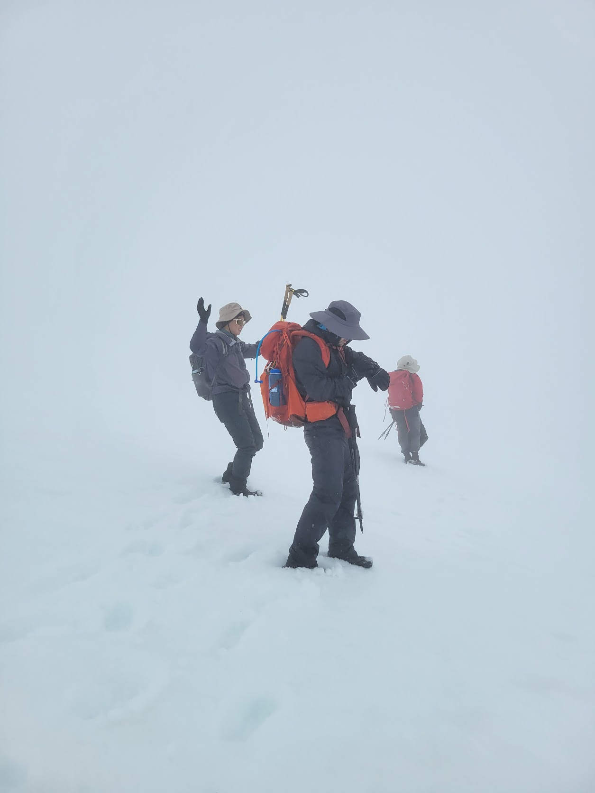
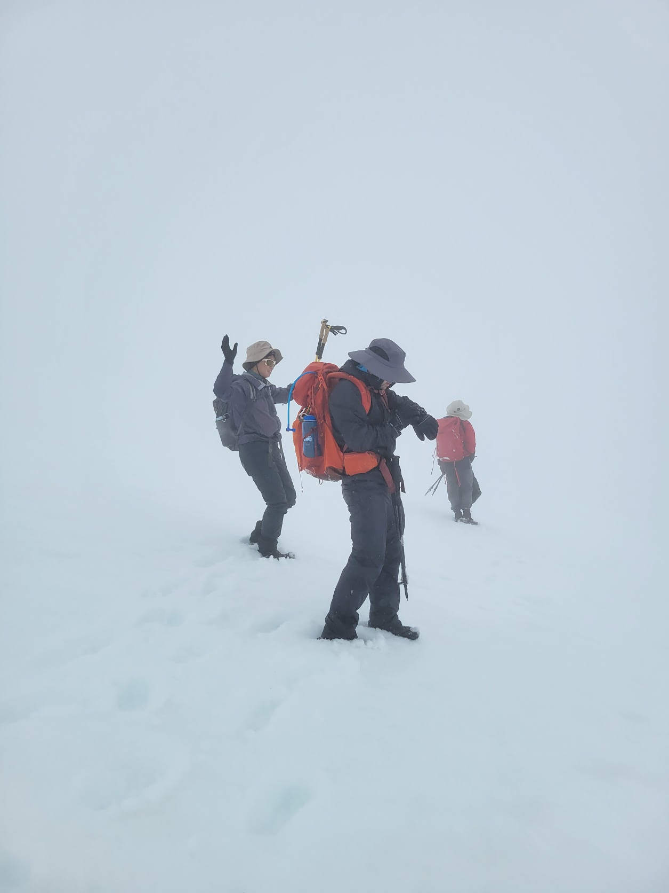

Mount Saint Helens (Jun 18–19, 2022)
This year is the snowiest year since 1948 in the Pacific Northwest.
There is snow on the ground at ~3000 ft above sea level on some mountains in mid-June, and poor snow conditions cancelled Claire's Mt. Rainier summit plans on Friday.
After descending from Camp Muir (10,050ft) on Friday, she joined us to bag an 'easier' PNW volcano the same weekend.
My wonderland trail plans for July 1st are in ruins as well - half of the trail hasn't seen a single person in 2022.
I did get permits for Mt. Saint Helens, although they were only for June 19th.
Despite the expectation of marginal conditions, Ariana, Christy, Claire, and I left Seattle.
It was a long hike but a lot of fun! There were clouds in the top ~2,000 ft of the mountain.
First, Dan had recommended Ape Cave, so we went to have a look.
Our original plan was to car-camp at the base of the mountain, at 'Climber's Bivouac', and start the climb on Sunday morning.
Unfortunately, the road was closed due to snow, which added an extra 2.5 miles each way.
Therefore, we did some surprise backpacking and walked a few miles in on Saturday with our camping gear, getting us fairly close to the summer trailhead.
Everyone was quite flexible despite not expecting to backpack.
The winter route (Worm Flows Route) is 5.6k vertical foot gain and 12 miles, while the summer route is 4.6k vertical foot gain and 9 miles.
We took the summer route despite the closed road adding extra mileage, since it would make for an easier summit day, and I knew the route from 2018.
Off we went!
The entire route was snowy, making it all a bit harder than last time I went up Mt. Saint Helens.
There were views on the way down, but it was cloudy the entire time on the way up, especially over 7000 ft.
Routefinding was relatively simple - head north until you get to the rim, then head south until you get to the forest.
Most of the ridges will work, but we stayed on the easiest one, and the GPS helped remind us when we were sliding sideways in one direction or another.
No views at the crater rim. Visibility was poor enough, and the group was tired enough, that it did not make sense to tag the summit half a mile west.
Nonetheless, everyone was happy to get to the rim.
 
While descending in the forest, an exhausted Claire stumbled and slid down a slope with a reasonable runout.
She collided with Ariana, and they both slid into a tree and myself. I had time to dig in fairly well, and everyone stopped.
However, Claire's hiking pole bent 15 degrees from getting crushed by the tree.
The route was not steep except for those 30 meters, which were 40 degrees, although it was very possible to plunge step down safely in the June snow conditions.
Christy, seeing the mayhem, opted to 'veggie belay' down instead of taking the snow, which seemed to work for her.
After hiking the forest road, we packed up camp and walked the 2.5 miles along the road back to the car.
It was quite a long hike, from 6:30am to 7pm. (It gets dark at 9:40pm here!), and everyone was exhausted.
Ariana decided to look at Mt. Saint Helens in the 'metaverse' to see the views of the crater that she had been promised.
Better luck next time!

While descending in the forest, an exhausted Claire stumbled and slid down a slope with a reasonable runout.
She collided with Ariana, and they both slid into a tree and myself. I had time to dig in fairly well, and everyone stopped.
However, Claire's hiking pole bent 15 degrees from getting crushed by the tree.
The route was not steep except for those 30 meters, which were 40 degrees, although it was very possible to plunge step down safely in the June snow conditions.
Christy, seeing the mayhem, opted to 'veggie belay' down instead of taking the snow, which seemed to work for her.
After hiking the forest road, we packed up camp and walked the 2.5 miles along the road back to the car.
It was quite a long hike, from 6:30am to 7pm. (It gets dark at 9:40pm here!), and everyone was exhausted.
Ariana decided to look at Mt. Saint Helens in the 'metaverse' to see the views of the crater that she had been promised.
Better luck next time!

While descending in the forest, an exhausted Claire stumbled and slid down a slope with a reasonable runout.
She collided with Ariana, and they both slid into a tree and myself. I had time to dig in fairly well, and everyone stopped.
However, Claire's hiking pole bent 15 degrees from getting crushed by the tree.
The route was not steep except for those 30 meters, which were 40 degrees, although it was very possible to plunge step down safely in the June snow conditions.
Christy, seeing the mayhem, opted to 'veggie belay' down instead of taking the snow, which seemed to work for her.
After hiking the forest road, we packed up camp and walked the 2.5 miles along the road back to the car.
It was quite a long hike, from 6:30am to 7pm. (It gets dark at 9:40pm here!), and everyone was exhausted.
Ariana decided to look at Mt. Saint Helens in the 'metaverse' to see the views of the crater that she had been promised.
Better luck next time!